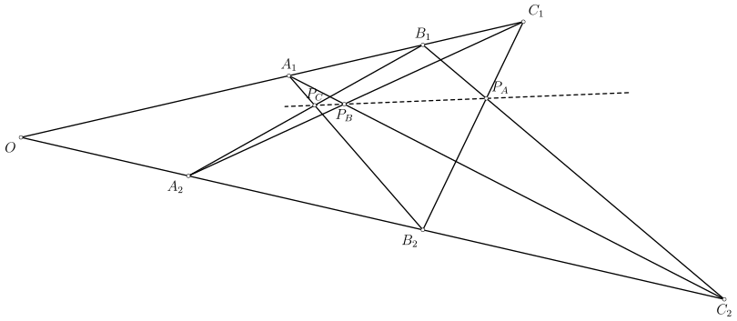
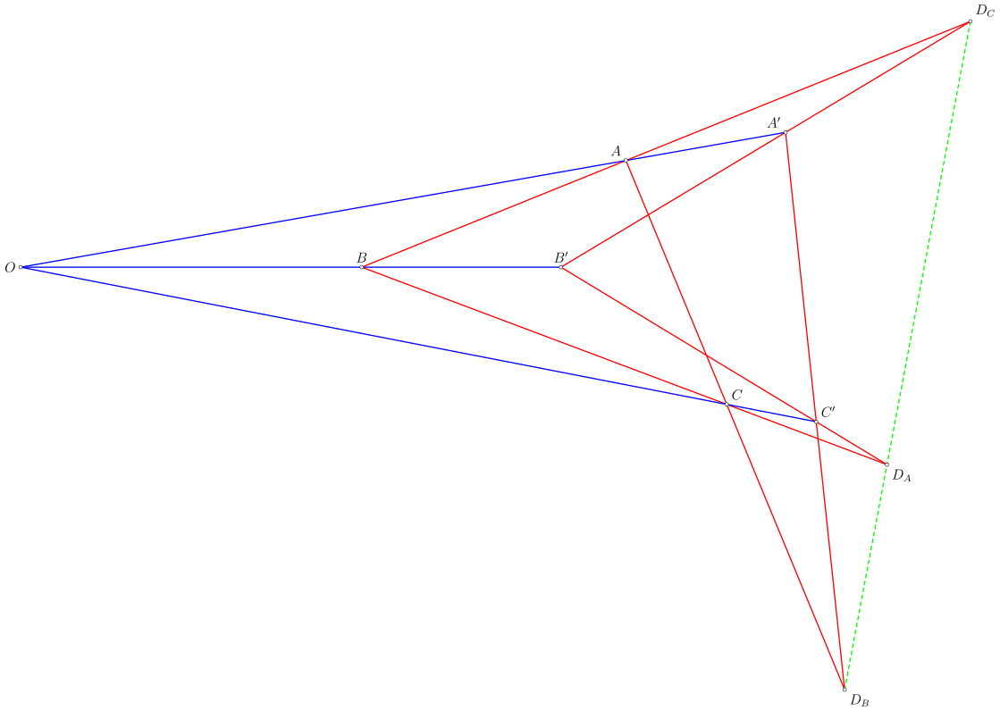

Hình học xạ ảnh
Phần 1: Trực giác hình học
Trực giác của phần này khá tự nhiên. Nhiều khi ta nhìn hai đường ray cắt nhau ở đâu đó rất xa, dù ta biết rằng thực ra chúng song song với nhau. Do đó, ta nảy ra ý tưởng là bổ sung một đường thẳng $\infty_{\mathscr{P}}$ vào mặt phẳng affine $\mathscr{P}$, được gọi là đường chân trời, hay đường thẳng vô cùng. Mặt phẳng ta nhận được chính là mặt phẳng xạ ảnh. Giao điểm của $\ell$ và đường chân trời được ký hiệu là $\infty_{\ell}$.
Ảnh hai đường ray "cắt nhau"{kind=link}
Giờ ta sẽ đi phân tích xem mặt phẳng xạ ảnh $\mathscr{P}$ sẽ có những gì. Đầu tiên, hai điểm phân biệt vẫn xác định duy nhất một đường thẳng. Vì mỗi đường thẳng lúc này đã có thêm một điểm trên đường chân trởi nên tiên đề liên thuộc thứ hai trở thành: Cho điểm $P$ và đường thẳng $\ell$. Khi đó tồn tại duy nhất một đường thẳng đi qua $P$ và điểm vô cùng $\infty_{\ell}$, chính là tiên đề liên thuộc thứ nhất với một trong hai điểm thuộc đường chân trời $\infty_{\mathscr{P}}$. Bây giờ, thay vì tồn tại ít nhất ba điểm không thẳng thì ta có ít nhất bốn điểm mà không có ba điểm nào thẳng hàng. Khi bổ sung thêm đường chân trời, hai đường thẳng phân biệt bất kỳ luôn cắt nhau tại đúng một điểm. Vì bây giờ không còn khái niệm song song, nếu ta cố gắng định nghĩa ra một "phép co giãn", trông nó sẽ như thế này:
Có hai vấn đề như sau:
- Nếu ta lấy một phép co giãn $\sigma$ trên phần affine của $\mathscr{P}$ và mở rộng nó lên toàn bộ mặt phẳng, vậy các điểm vô cùng sẽ đi đâu?
- Lấy một phép co giãn trên mặt phẳng xạ ảnh và bỏ đi một đường thẳng, liệu rằng ta có thu được phép co giãn thông thường?
Bằng cách thay các từ "song song" trong các lập luận của hình học affine thành "có giao điểm nằm trên $\ell$", ta có các trường hợp sau:
- Phép chiếu $\sigma$ là suy biến;
- Phép chiếu $\sigma$ có đúng một điểm bất động bên ngoài $\ell$ và nó nằm trên vết của các điểm;
- Phép chiếu $\sigma$ không có điểm bất động nào bên ngoài $\ell$ và tất cả các vết của $\sigma$ đồng quy trên $\ell$.
Cuối cùng, tiên đề Pappus trông như thế này:

Như vậy, các đặc trưng của mặt phẳng xạ ảnh đẹp đẽ hơn nhiều so với mặt phẳng affine, vì ta không cần chia trường hợp. Ta sẽ liệt kê chúng ở dưới:
- Tồn tại duy nhất một đường thẳng qua hai điểm phân biệt cho trước;
- Tồn tại duy nhất một điểm trên hai đường thẳng phân biệt cho trước;
- Cho hai điểm phân biệt $P,Q$ và một đường thẳng $\ell$ không chứa chúng. Khi đó với mỗi điểm $R\in\overline{PQ}$ khác $P,Q$, tồn tại một phép chiếu xuyên tâm $R$ ứng với $\ell$ và biến $P$ thành $Q$.
- Cho hai đường thẳng $\ell_{1}$ và $\ell_{2}$ cắt nhau tại $O$. Trên $\ell_{i}$ lấy ba điểm phân biệt $A_{i},B_{i},C_{i}$, với $i=1,2$. Gọi $P_{A},P_{B},P_{C}$ lần lượt là giao điểm của $\left(\overline{B_{1}C_{2}},\overline{B_{2}C_{1}}\right),\left(\overline{C_{1}A_{2}},\overline{C_{2}A_{1}}\right),\left(\overline{A_{1}B_{2}},\overline{A_{2}B_{1}}\right)$. Khi đó $P_{A},P_{B},P_{C}$ thẳng hàng.
Để kết thúc bài viết, ta phát biểu và chứng minh định lý Desargues phiên bản xạ ảnh:
